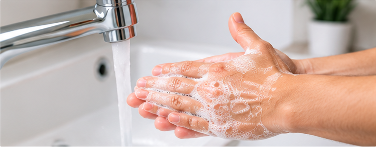
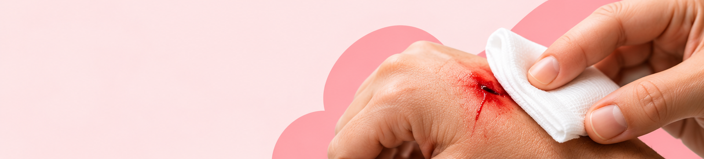
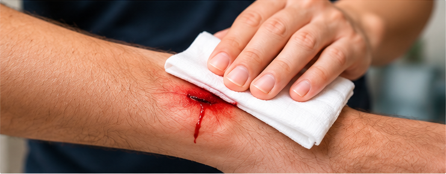
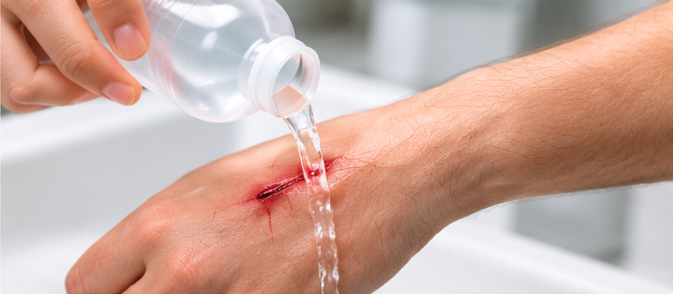

What to Do First
- Make sure the area is safe.
- Wash your hands before helping someone.
- Wear disposable gloves if available.
Cuts and bleeding can happen at home, school, work, or outside. Learning basic first aid can help you respond safely and prevent infection.



